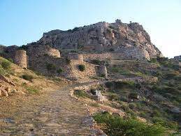
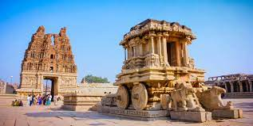

The Gooty Fort, also known as Ravadurg, is a ruined fort located on a hill in the Gooty town of Andhra Pradesh, India. The word Gooty (locally pronounced "Gutti") is derived from the town's original name, Gowthampuri. It is one of the centrally protected monuments of national importance.
Know more
Hampi or Hampe, also referred to as the Group of Monuments at Hampi, is a UNESCO World Heritage Site located in Hampi (City), Vijayanagara district, east-central Karnataka, India.[2] Hampi predates the Vijayanagara Empire, it is mentioned in the Ramayana and the Puranas of Hinduism as Pampa Devi Tirtha Kshetra.[3][4] Hampi continues to be an important religious centre, housing the Virupaksha Temple, an active Adi Shankara-linked monastery and various monuments belonging to the old city.
know moreSri Ananta Padmanabhaswamy Temple is a Hindu temple located in Thiruvananthapuram, the capital of the state of Kerala, India. Anantapadmanabhu means one who has a lotus in the navel and has no end. Sri Anantapadmanabhaswamy Temple is a temple dedicated to Lord Vishnu. The management of this temple is currently run by the trustees of the Travancore royal famil
Know more